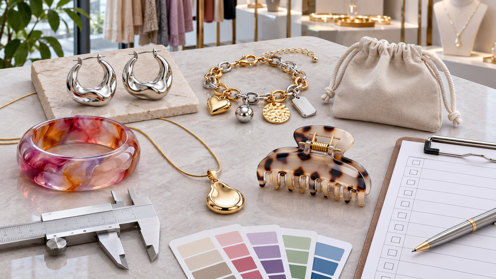
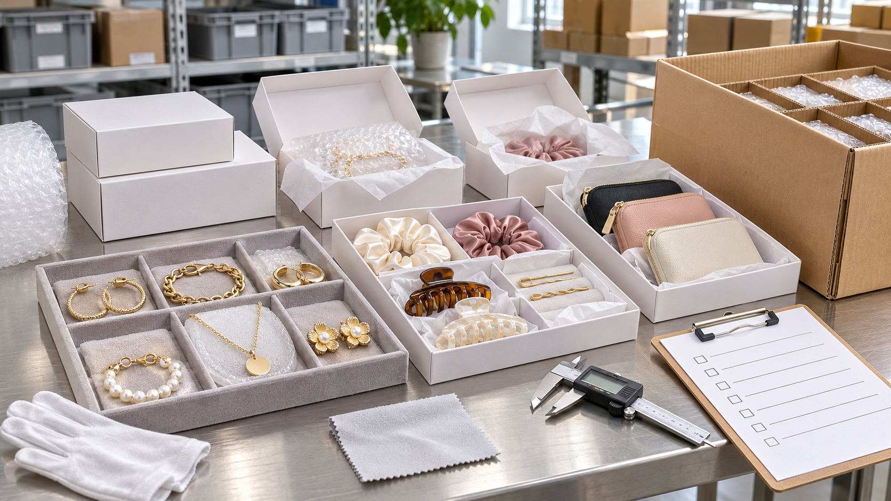

Direct answer: Build a focused test around current self-expression signals—sculptural pieces, mixed metals, charms, bold bangles and giftable hair accessories—then confirm original design, material, coating, weight, clasp and packaging before ordering at scale.

1. Turn a trend into a narrow retail story
2026 fashion reporting points to bolder sculptural pieces, mixed metals, charms and personal styling. Use the signal to choose one customer and price range: a statement earring with matching bangle and hair clip, for example, rather than an undefined request for “popular jewellery”. Avoid licensed logos, characters and copied branded designs; a marketplace photo is not authority to sell the design.
2. Put material and finish in the RFQ
Similar-looking accessories may use different base metals, plating, coatings, resin, stones, adhesives, clasps and backing cards. State required material, finish, colour, dimensions, target weight, attachment type, retail pack and destination market. Require written approval before any substitution.
| Control | Buyer check |
|---|---|
| Metal, plating or coating | Inspect for scratches, uneven colour and exposed base metal. |
| Clasp and attachment | Check closures, pair matching and charm/stone attachment. |
| Retail pack | Approve card, pouch, insert and barcode position. |
| Carton protection | Separate pieces to prevent tangles, scratches and loss. |
3. Treat safety requirements as a gate
Requirements vary by destination, material and intended wearer. Children’s jewellery can have stricter limits and testing obligations than adult fashion accessories. Obtain appropriate compliance advice for the target market; an agent can collect supplier files and coordinate samples/QC but cannot certify legal compliance.

4. Inspect finished goods and cartons together
Check quantity, finish, sharp edges, clasp operation, pair matching, attachments, colour, label/pack version and carton protection against the approved sample. Inspect several cartons, not only display samples. For mixed orders, keep a receiving record by supplier and SKU before consolidation. See the pre-shipment inspection checklist and carton-marks guide.
Build a controlled accessories RFQ
Send references, target market, material/finish, quantity and packaging needs for an initial sourcing review.